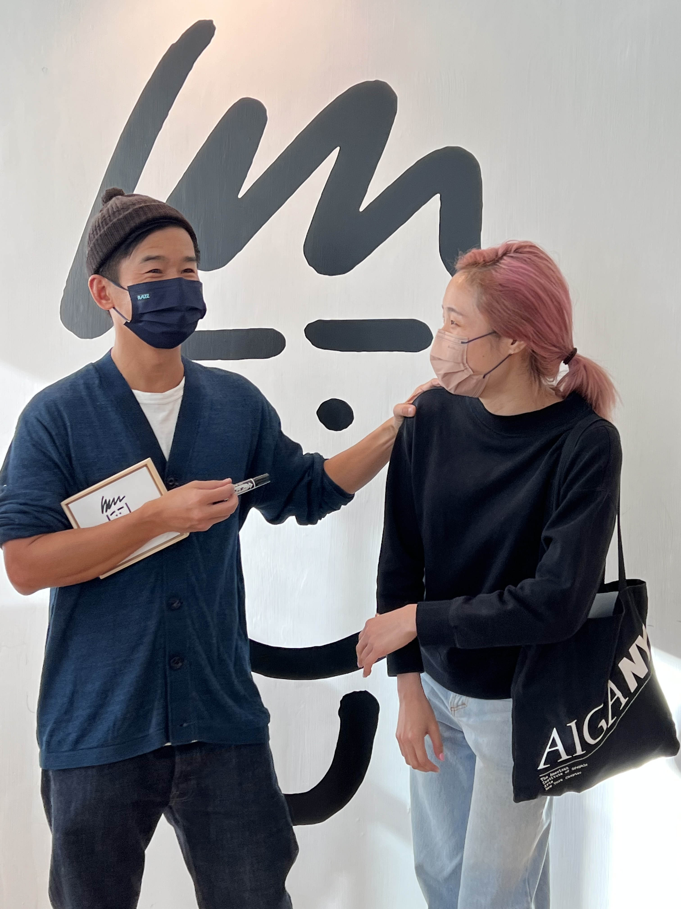

Hi, I'm Antoinette, a designer from Hong Kong based in NYC.
I've always liked words. I find it fascinating that humans have created these symbols and sounds and collectively agree on what they mean when put together, in order to exchange inner thoughts with one another. I graduated with a Bachelor of Arts in Linguistics from the Unversity of Sydney, knowing that my true passion lies in the more abstract form of visual communication.
üë©‚Äçüíª I like to think of myself as someone who writes with colors and paints with words.
Design to me is very much an underdog in society. I'll save the debate on whether the Crystal Goblet should be drowned or not; but it's undeniable that design, especially good design is too often overlooked. I guess I pursue design as my own little revolution – because I know its power in creating an impact and I want to be part of bringing positive change.
It's helped me learn a lot about our world, but it's also been a way for me to learn a lot about myself. The Designer's Authority workshop I did during my MPS at Parsons explains my design approach, which also shows how I usually approach problems. Design after all is creative solutions.
ü§ì "Etudiant" is the gerund form of "to study" in French, and an allophone of √©tudiant meaning ‚Äústudent‚Äù.
That's what I named the first typeface I designed. I guess the whole thing about a typeface design being "never finished" reminded me that everytime I work on anything, it is an opportunity to learn; how I took this type design course because I like learning; and how I want to always be learning new things. I've always thought that maybe one day when I retire I'd do a bachelors in psychology.
ü´° The man who inspired me to be a designer
